grs_test
Gibbons-Ross-Shanken test of zero pricing errors in a factor model
Contents
Syntax
grs = grs_test(returns,factors)
[grs alpha] = grs_test(returns,factors)
[grs alpha beta] = grs_test(returns,factors)
[grs alpha beta stats] = grs_test(returns,factors)
[...] = grs_test(returns,factors,method)
[...] = grs_test(returns,factors,'GMM',lags)Model
grs runs the linear time series regression
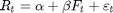
to test the hypothesis that all elements of the vector 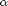 are zero. 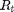 is the 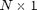 vector of excess stock returns at time 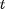 and 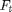 is the 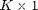 vector of factor returns (assumed to be excess returns of zero-cost portfolios). grs reports the statistic
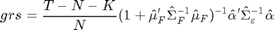
and uses its finite sample distribution 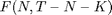 to produce p-values and other statistics. 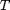 is the total number of observations and
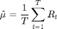
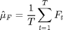
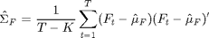
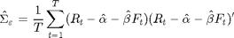.
Description
grs = grs_test(returns,factors) gives the grs statistic (a number) for the null hypothesis that that all elements of the vector are jointly zero. Factors is a 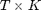 matrix of observations of 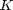 pricing factors. returns is a 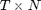 matrix of observations of the returns of 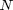 assets. Note: the matrix of factors should not include a column of ones.
[grs alpha] = grs_test(returns,factors) gives the 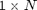 vector of intercepts (or pricing errors) .
[grs alpha beta] = grs_test(returns,factors) gives the 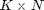 matrix of regression coefficients 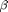.
[grs alpha beta stats] = grs_test(returns,factors) gives a structure with the following statistics
stats.R2 mean 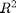 of all the the regressions
stats.adjR2 mean adjusted of all the regressions
stats.absDev average absolute intercept 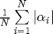
stats.stdErr vector of standard errors of
stats.tstat vector of t-statisitics for
stats.SR "Sharpe Ratio" of the intercepts 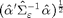. Lewellen, Nagel and Shanken (2010) recommend reporting it
stats.p p-value of the grs test
stats.sigmaF 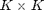 matrix of covariances of
stats.sigmaEpsilon 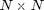 matrix of covariances of 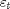
stats.sharpeF Sharpe ratio (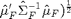 of the ex-post tangency portfolio constructed from the factors only
stats.sharpeAll Sharpe ratio of the ex-post tangency portfolio constructed using the factors and the portfolios
stats.criticalValue 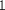, 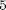 and 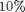 critical values for the grs test
[...] = grs_test(returns,factors,method) uses the string method to select alternative ways to estimate the model and test 
'GRS' This is the default. The computations are those described above.
'Asymptotic GRS' Does not have a finite sample adjustment, ie. the factor 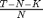 in the grs statistic is replaced by and the limiting distribution is 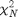 instead of .
'GMM' Uses a GMM procedure with Newey-West corrected standard errors:
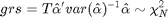
with 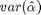 computed by adjusting for heteroskedasticity and serial correlation using the estimator of Newey and West (1987). You can specify the number of lags to use by using the input argument lags. The default is 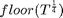.